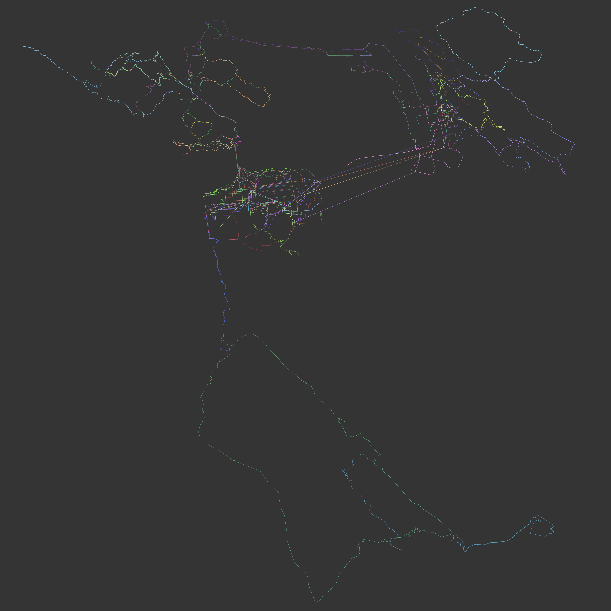

Strava-Derived Bicycle Heat Mapping
Dedicated Rider JOEY - my brother - SF Bay Rides
Since moving to San Francisco, my brother has taken up cycling, and he logs his rides on Strava. I was curious about the portability of Strava's data, and thankfully my brother allowed me to sign into his account to harvest hundreds of GPX files associated with individuals rides.
I made the following maps with his route data. While Strava on mobile and desktop does offer a heatmap feature, it's nice to have some customizability with dedicated GIS software.
Since showing these maps to friends, other cyclists and runners I know have expressed interest in commissioning their own. I'm eager to make more, but I will have to learn a fast automated way to download batches of GPX files; for my brother's maps, I had the privelege of borrowing his sign-in, and I had to download each route individually.

